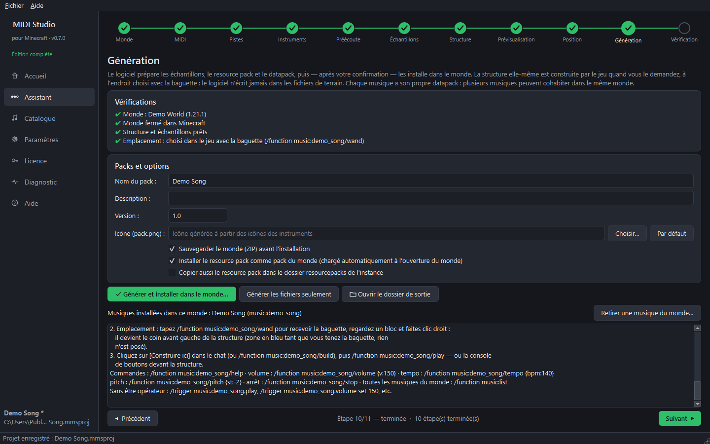

Transformez n'importe quel fichier MIDI en musique jouée dans votre monde Minecraft Java.
Des échantillons préparés note par note, un resource pack généré, une structure de rails et de wagonnets qui illuminent les blocs en rythme, et des commandes en jeu. Aucun mod nécessaire.

Vidéos
Exemples
Le thème joyeux (trop joyeux ?) du jeu de Dan Salvato, rejoué note par note avec les sons des blocs musicaux.
Le tube dance de 2000, avec sa mélodie et ses « la la la » portés par les wagonnets.
La marche folle du défilé des rêves du film de Satoshi Kon, un morceau dense et entraînant.
Le refrain entêtant de 2022, version Minecraft, sans aucun mod.
Ce qu'il fait
🎵 Un son propre
Un échantillon par note : Minecraft ne change jamais la hauteur d'un son, les accords et les mélodies restent justes.
🛤️ Un vrai spectacle
Rails propulseurs, wagonnets qui arrivent sur la ligne exactement sur leur note, blocs de couleur qui s'illuminent, fosse de lave et console de boutons.
🎛️ Commandes en jeu
Lecture, pause, arrêt, volume (10–500 %), tempo, hauteur, vitesse et déplacement, par commandes, /trigger ou la console de boutons.
🧭 Pas à pas
Un assistant en 11 étapes : monde, MIDI, pistes, instruments, préécoute, échantillons, structure, vue 3D, position, génération, vérification.
🔒 Sans risque pour vos mondes
Une sauvegarde ZIP avant toute modification, aucun fichier supprimé, et une confirmation explicite avant d'écrire quoi que ce soit.
🌍 Français & anglais
Le logiciel, les messages du datapack et le resource pack suivent la langue choisie.
Comment ça marche
- Choisissez un monde et un fichier MIDI.
- Choisissez les instruments et écoutez le rendu Minecraft.
- Générez : les packs sont installés dans le monde, puis tapez /function music:build et /function music:play.
Éditions gratuite et complète
| Gratuite | Complète | |
|---|---|---|
| Durée du morceau | 20 premières s | illimitée |
| Pistes | 3 | illimitées |
| Notes jouées | 300 | illimitées |
| Instruments de note block | 8 de base | les 16 + sons perso |
| Sons de mobs | voix de 3 animaux de la ferme | tous les mobs de votre version |
| Profil d'optimisation personnalisé | — | ✔ |
| Export pour un serveur | — | ✔ |
| Export audio (MP3, WAV…) | — | ✔ |
| Musiques dans le même monde | 1 | plusieurs |
| Message de crédit dans le chat | toutes les 20 s | — |
| Ralentir la musique en jeu | jamais sous la vitesse d'origine | ✔ |
Achat unique, sans abonnement. La licence est liée à votre compte Google : activez-la une fois en vous connectant à Google, puis elle fonctionne sans internet. Sur un autre ordinateur, il suffit de se reconnecter.
Guides
Des guides pas à pas avec captures d'écran. Chacun existe aussi en PDF.
Questions
Quelles versions de Minecraft ?
Java Edition. Version de référence 1.21.1 ; les mondes 26.x sont pris en charge (datapack testé sur des serveurs 1.21.1 et 26.1.2).
Faut-il un mod ?
Non. Tout est vanilla : un datapack et un resource pack.
D'où viennent les sons ?
De Minecraft (ils appartiennent à Mojang). Le logiciel utilise votre installation, ou télécharge lui-même les fichiers officiels depuis les serveurs de Mojang, comme un launcher (environ 41 Mo, une fois). Rien de Minecraft n'est fourni avec le logiciel, et Note Block Studio n'est pas nécessaire.
Ça marche sur un serveur ?
Oui (édition complète) : exportez les packs et suivez le guide serveur.
Puis-je partager ma licence ?
Non : une clé ne marche qu'avec le compte Google pour lequel elle a été achetée. Vous pouvez l'utiliser sur tous vos ordinateurs.
Mes données sont-elles envoyées ?
Seulement pour l'édition complète : à son activation (puis environ une fois par semaine), le numéro de licence et l'adresse Google vont au registre des licences de l'auteur. Sinon le logiciel contacte seulement Mojang (sons officiels) et Google (pour activer l'édition complète). Voir la page Confidentialité.